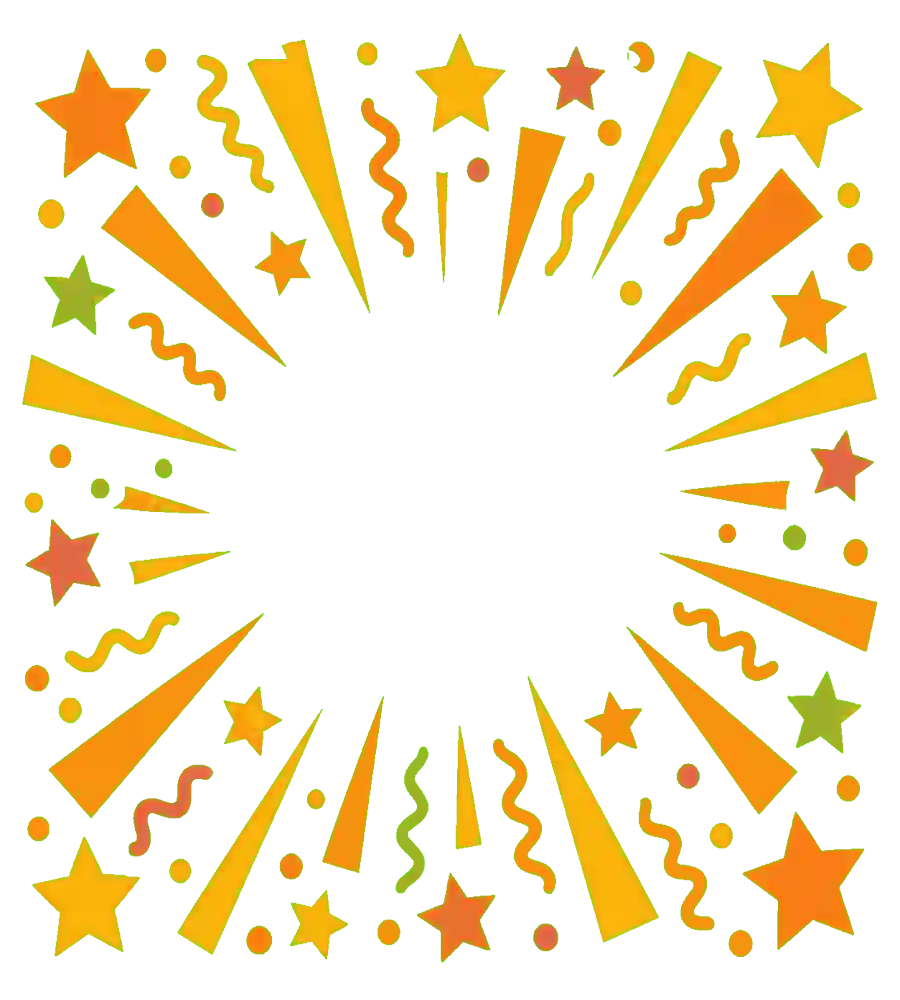
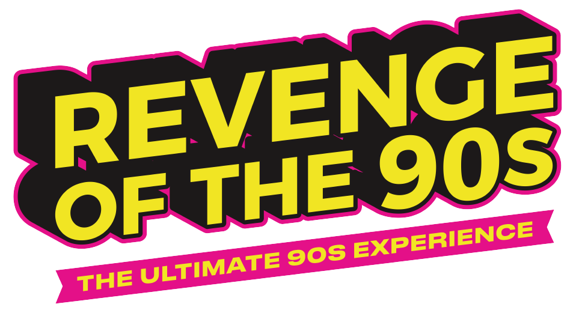

Hoje joga-se pelos telefones da sala.
A LIGAR…
ESTÁS NA FILA
–º LUGAR
–
Não feches o ecrã — avisamos-te aqui assim que chegar a tua vez.

É A TUA VEZ!
jogador – · –
15s
—
PRONTO
ESTÁS A JOGAR NO ECRÃ:
ESCREVE O TEU NOME
TOP 5 DE HOJE
Para voltar a jogar, lê o QR outra vez e entra na fila.

ATÉ À PRÓXIMA!